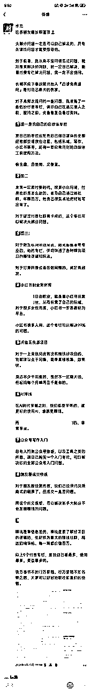
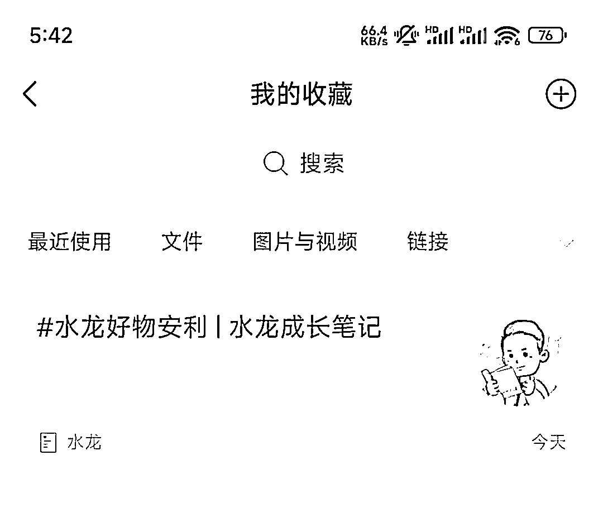

来源：https://ie5wfc519n.feishu.cn/docx/TDbIdnYvToSNzpxp1CGcG7cwn1b
大家好，我是水龙，生财新圈友，上次写的文化衫帖子得到了大家的好评，还被邀请发布在官方公众号，这令我十分喜悦，我目前文化衫主要是给自媒体IP做定制，在和自媒体人打交道的过程中，我自己跑通了我的自媒体商业化。
自媒体圈，去年年底小报童大火，不少人通过小报童这种低价可分销的产品都赚到了钱 ，我也不例外，经过半年的折腾，我跑通了小报童平台的分销赚钱，小报童低转高，小报童发售的全环节。
通过小报童+分销带货赚佣金，我在半年左右带货百万，利润超过40万+。
今天这个帖子，没有废话，全是个人经验，希望对做自媒体以及做知识付费的圈友有所帮助。
一款基于微信平台的，自带分销功能的付费专栏，分为订阅制和买断制。
个人IP较强，且内容和小说一样是连载性质的，采用订阅制，个人IP较弱，内容聚焦某个主题，写完，用户就一直用的，采用买断制。
新手一般申请买断制专栏
浏览器搜索【小报童官网】填申请书申请，后联系客服开通，也可以手机微信搜索【小报童投递】公众号，点击【我的】找到【专栏申请】就可以了。
小报童工具的合伙人计划，就是分销中心，用户不用购买，也可以生成分销海报
可以把小报童平台当做自己的知识产品库，可以去分销优质作者的专栏赚钱
如何生成自己的分销海报，参考下图：
而对于刚开始做【付费专栏】的小伙伴，为了让你的粉丝更有动力地进行分销，我建议分销比例可以提高一些，像我设置的是最高的60%的分销比例，我建议做活动的，比例最好调到最高，这样子，可以保证参与活动的人的积极性比较高。
共创计划中心，也是看分销榜单的地方，你可以在后台查看帮你分销的人的销售额。
小报童的提现除了15%的手续费，还要扣个税的，总的比例在20~25%，提现是每周四，所以做活动要预留好回款时间。
以专栏收入100元作为例子：平台扣除15%，到个人账户是85元，个人提现，要扣约6.1%的个税，最终到账是79.81元。
提现路径：【小报童投递】公众号——【我的】——【收入】-【提现】满10元就可以提现，打款日为每周四。
路径：登陆网页小报童官网网站-创作者中心-发布内容
如图所示，网站搜索小报童官网进入官网地址：小报童
电脑发布内容好处：
编辑功能较全，有三种字体大小可以选择，整体排版让读者会更舒服。
（电脑版发布功能）
（手机端发布功能）
路径：【小报童投递】公众号-【开始阅读】-【我的专栏】-【发布】
导航目录可以很好呈现你的专栏的内容，一定要特别留意标题
制作导航目录的方法：
目录导航栏制作方法方法：
1、新建一个帖子，并置顶
2、选择超链接按钮，填写其他帖子的挑标题和连链接
完整指示如下：
3、可以将制作的目录分好类，方便读者读最新内容。
导航可以设置免费预览，方便分销的人，去进行分销，用户看到目录内容，也更容易下单购买，水龙的自媒体专栏，目录如下：
小报童每个季度只有15个免费赠阅额度，如果是直播需要后台发货的，需要更多免费链接，可以找官方客服批量购买免费链接（价格要联系官方客服，由官方客服报价）
可以生成优惠券，最低是4折，一般可以用于粉丝专属渠道，例如公众号之类。
一般我会生成小批量的优惠券放在公众号底部文章展示，对于粉丝来说是一种优惠，如果是在自己的学员社群里，也可以通过优惠券的形式，让他们以较低价格购买。
在做活动分销的时候，也可以生成优惠券，专门用于奖励某些拉新比较厉害的KOL。
可以通过测试，确定用户的购买意愿
可以在公众号或者微信朋友圈等各种私域渠道测试各种命名下，用户的购买情况，再去确定自己最后的专栏命名。
像我就是最后确定了关键词：自媒体。
我一开始名字，并不是水龙手把手带你学自媒体，后面调整名字是为了更好地放大我这个IP的势能，所以，新手在命名的时候，要根据自己的目标，确定一个好的名字。
对于不清楚如何确定一个较好的小报童简介的同学，可以参考以下方法
简介内容包括自我介绍，专栏内容，定价等，
有三个点要特别注意：
1、买断制专栏要明确至少写多少篇，像我就是至少100篇，用户是会算单价的。
2、全部介绍写完，生成的海报不得超过手机屏幕大小。
3、定价，一定要有涨价空间，我的就是10元定价，满3000份，涨价到19.9元，满5000人，涨价到29.9元。
最后呈现的形式如下：
做专栏的第一目的是引流精准到私域！！对于小报童而言，佣金分成收入是很少，后续一定要做低转高的发售才会获得较高的收入（第三第四节课会讲到）
建议微信至少准备两个，一定要是日常使用，有日常消费的老号（防止被封号）。
小报童的阅读是公众号投递，阅读体验很差，建议做小报童的作者最好是建立小报童读者交流群，将制作的导航目录放在微信群公告，便于堵住一键抵达。
微信置顶小报童公众号
可以点开始阅读，直接用微信浏览小报童内容，也可以点【开始阅读-发布】，直接在手机上创作内容。
个人简介、logo、名称都是可以通过公众号快读修改的。
小报童是可以不用花钱购买就可以分销，就意味着整个平台就是一个巨大的产品资源库，整个平台有各种各样的知识专栏，你都可以分销赚钱。
七分靠选品，三分靠运营，产品，事半功倍
如何选到优质的专栏，进行分销？
根据自己社交圈子或者个人属性，搜索对应的关键词，例如：我是日更写作的，擅长做私域的。
那么，我卖得好的专栏的关键词一般是：公众号、私域、写作等
以搜索生财为例：
搜索关键词出来，获得的就是销售数量的排名，然后根据排名，和专栏的内容质量。
我推荐的顺序是：
价格便宜（最好10元），分销比例高的，优先推荐
内容数量多的，优先推荐
圈内咖位大的，优先推荐
和自己关系好的，知根知底的，优先推荐
如果是自己不确定内容质量，最好，可以购买一份，查看一下里面的内容，如果质量不好，直接申请退款就可以了（24小时内，平台无理由退款）
为了增强搜索关键词是符合趋势的，要多入一些付费圈子，看大家都在讨论的话题，
例如，我就经常关注生财有术风向标和淘金之路的项目，我看他们重点推荐的项目是什么，找到可靠的信息和内容，我就找对应的专栏，例如最近生财一直在推视频号，就意味着视频号的专栏肯定会更好卖。
我们要顺趋势去销售，包括大家在制作自己的专栏的时候，一定也要含有【顺趋势】的关键词
我有在自媒体圈内很多大佬的小报童分销群，这类社群，一般都会推荐刚出的专栏，像分销群的很多专栏都是他们官方审核过的，质量都是比较不错的。
这类专栏特点：一般主理人推荐之后，一定要第一时间卖，因为圈子肯定有重叠，谁先发，谁就可能和你先购买了。
另外，一般这类专栏都有设置冲榜奖励，你可以通过销售这个小报童和主理人加强关系，如果是有能力拿下榜单的话，你还会获得主理人流量推荐和丰厚的奖励。
所以，前期，你多帮他人分销专栏，积累人缘，赚佣金，如果能打榜，还能顺势破圈，我在圈内的影响力就是通过一场场小报童的打榜形成的。
尤其是打算要去做自己专栏的同学，一定要多加入一些分销群，去认识积累有分销能力的人，水龙一般会特别关注分销榜单上面的人，而且我会主动链接榜单上的高手，主动和他们社交。
互联网就是由有内容创作能力的人和搞流量的人组成的。
认识越多的小报童作者，认识越多的分销高手，大概率，你离赚钱就很近了，因为你解决了内容和流量难题。
新人一定要学会合作、学会抱团。
新人分销小报童打榜技巧：
1、能拿第一，一定要拿第一
拿第一，除了赚奖金和奖品之外，更重要的是积累【个人里程碑事件】，获得圈内势能，新手小白可以冲榜知名度不高的中小IP，相对容易，有一定私域基础的，可以尝试冲榜大榜单，一次打爆自己的势能。
冲榜和销售赚钱是不同概念的，目前小报童圈内，大家在冲前三的时候，会选择自己全额补贴冲榜，大概一单补贴4元，所以，在冲榜的时候，一定要提前算好成本。
2、不能拿榜一，优先【流量推荐】
分销榜单的奖励一般是有排名奖励和里程碑奖励，经常会有分销达到某个数量就会有流量推荐，对于有流量推荐的，一定要尽力去冲，这相当于是与主理人互换流量，如果自己私域比较充足，那通过冲榜，还能获得精准优质的付费流量是非常划算的。
3、有训练营或者合伙人奖励的榜单，尽可能去分销冲榜
有不少小IP主理人推出小报童发售的时候，由于自己势能不够，通常会给比较高的奖励，小报童的冲榜成本低，且容易达成，所以可以通过冲榜，薅主理人的羊毛，低成本获得高价值产品。
4、小报童读者群和分销群一定要加入，是个不错的流量渠道
能被主理人邀请进分销群的，一般都是有付费意识的KOL，所以进分销群，不论自己有没有分销能力，也要加入，参与活动，了解活动，尽可能地创造机会，多链接好友。
小报童读者群，虽然是低价社群，但也是付费社群，有的主理人的读者群是运营得比较好的，所以，不要因为价格低，就忽略社群价值，也要保持活跃，真诚交友。
要养成搜索朋友圈关键词的习惯，有时候，看到朋友圈很多人都推荐的专栏的时候，可以购买，测试看看销售情况。
如果发个圈，就有人购买，证明这大概是个爆品，如果发了圈，没人买，那就可以选择退款。
定向刷朋友圈
另外的一些方法，例如大咖推荐，群友推荐，小报童官方精选之类的方法，总之，有一个原则：
选好品，测好品，再去大力分销，事半功倍！！！
知识付费的下一站是提供情绪价值，对于自媒体新手来说，最好的就是做一个自己的付费陪伴社群，那如何建立门槛呢？
小报童+付费社群
过去纯社群收费的模式，对于没有名气的小V来说是很难的，那小白应该如何做呢？
可以建立一个自己的付费社群，将和自己购买过产品的人，都免费邀请到这样子的社群里。
社群名字可以是：XXX和他的朋友们，和XXX一起成长，XXX的成长群之类
通过分销建群有几个好处：
1、社群是赠送的，那社群的交付其实就很简单，就是大家一起交流，彼此认识，没有其他交付压力，主打一个陪伴成长的情绪价值
2、社群有持续的内容来源，可以让分享一些专栏的知识，提醒购买过的群友去看一下，彼此还可以探讨哪个人做的专栏更好
3、社群可以作为自己做自媒体的基本盘，会产生复购，以及积累长期信任，他们有购买知识产品需求，就会优先和你购买。
卖完，你还有更好的更好的交付！
新手小白销售专栏要以朋友圈和公众号为主，尽可能不私聊（后面分享水龙独家私聊技巧）
分销原则：低价产品不私聊
朋友圈发圈最好时间点：早上8点、中午12点、下午6点、晚上8点、深夜12点
我一般选择的就是吃饭的时候，顺便发个圈，因为一般要等菜，等的过程中，顺便把饭钱赚了。
选择隐藏朋友圈而不是删掉的原因是有可能这条朋友圈文案和素材，下次还需要用到
左边是我卖海专栏，我一天发了6到8条朋友圈，一天就卖了100多单，一单赚6元，一天就赚了600多元。
右边是别人看到我朋友圈的样子，一般来说，他们看到的只有我的生活，思考，公众号文章。
所以，朋友圈不是不能发广告，而是不能刷屏发广告。
凌晨一两点，最多人买
分销重点技巧：
记得一定要在评论区加一句：购买之后找我领取专属礼物（社群）
这样子你就赠送他你的陪伴群了，如果他已经在你的陪伴群了，那就送一份电子版资料。
对于每次和你购买小报童的伙伴，一定要打标签【小额买单】，这样子有利于你未来【低转高客单】
这样子，你就能通过小报童的筛选功能，将付费意识的用户筛出来，并且通过陪伴群这个池子持续“养鱼”
资料的话，如果平时没有收藏的习惯，就可以用知识星球搜索功能，例如，我卖公众号专栏，我就送一个和公众号相关的PDF。
这样子，你和你的微信好友的互动，频率就会越来越高，不断会增加你自己的社群好友。
你有一个自己的付费社群，和没有社群，是两类人
点赞送资料：准备一些和你要推的专栏有关的资料，最好是比较硬核的，如果没有，可以去闲鱼买，闲鱼很多虚拟资料
例如，像这个点赞送了公众号资料之后，你就可以问一句，你最近是不是在公众号写作，再顺手推荐一个公众号写作专栏，就顺理成章。
点赞送红包：我会在一些特定的节日，例如六一，春节之类，都会点赞送红包，激活私域
经典案例：我通过点赞送红包，激活一个4999元的合伙人
一些经营私域的原则：
1、没有理由，绝不私聊微信好友，私聊是对好友最大的打扰，如果朋友圈不出单，就增加好友基数，改进文案和选品
2、朋友圈，永远只保持少量的广告，小报童，永远只有一条广告
3、朋友圈，主要以价值观，个人思考，个人生活，个人成长组成。
将一些长期卖得好的专栏，写长文案，长期置顶在朋友圈，定期更换专栏，就可以实现长期赚钱。

置顶帖要点：
1、重点突出作者背景，地位，专栏订阅数量，专栏领域
2、重点突出专栏价格，一般是价格越低越好，性价比为主
3、评论区引导点赞或者是送资料。
公众号子菜单，可以用【图片消息】直接上传当天朋友圈的广告，做成合集，这样子朋友圈的广告就会移动到公众号备份了。
水龙成长笔记

公众号是私域的备份
可以做成合集形式，放在收藏夹，日常，有人问到的时候，就可以推荐对应的专栏。
日常通过微信好友，自我介绍的环节，可以加上自己的专栏，可以直接产生成交。
当自己某个专栏是打算冲榜的，可以通过自己建立的陪伴群去销售，但建议控制频次。（一个月一次）
分享做私域的20字真言：
钩子加微信
发圈建信任
活动造势能
私聊促成交
社群销售专栏是一个重要的场所，这里分享一下经验：
1、冲榜一般是直接补贴，所以对于社群成员来说是福利，可以在社群以【发福利】的的角度去卖
2、某些佣金较高的专栏，在销售之前，一定要讲清楚自己和主理人的关系，再销售，且要提前准备好水军。
3、能邀请专栏主理人到社群做分享是最好的销售方式，可以让主理人采用故事+干货的分享方式，最后再推出社群专属福利，这样子的销售效果是最好的。
做知识付费，产品价格体系是非常重要的，由低到高，应该逐层递进，常见的两种价格体系：
1、低价小报童（10元）—陪伴群（百元）—俱乐部（千元）—合伙人（万元）
2、低价小报童（10元）—陪伴群（百元）—训练营（千元）—私教（万元）
上一个层级的人数越多，下一个层级的人数就越多，逐层递进。
小报童群和百元群一定要做明显的区分。
水龙的百元群服务是365天不间断分享，还会组织公众号互推之类，但是小报童读者群是不做分享，且不回答问题的，读者就是自己看内容。
我的小报童是自媒体小报童，陪伴群是自媒体社群，所以向上升单的时候，标签一定是要统一的。
日常升级陪伴群，我采用的策略是：小报童用户打7折可以补差价升级自媒体群。
那如何更好地让用户补差价升级百元群呢？
不少专栏主理人在结束以后，就不更新内容了，但我近半年测试下来，我在发售结束以后，继续保持更新，就不断有读者和我建立更好的关系。
当读者遇到具体的问题的时候，就可以及时推荐自己的百元群产品。
每周末，可以做个主题分享，分享结束以后，可以通过私信【领资料】的形式，私信升单。
对于专栏内容底部，有点赞或者有评论的，一般是深度认可内容，可以重点突破，升单。
我专门开了一个公众号，每次文章底部都会带货，而我的小报童读者群，我是通过每天分享文章，不断洗流量，不断产生复购的，这样子，就可以长期赚钱了。
有出专栏的作者，都会建立一个自己的分销群，把一些分销成功的人，都邀请到自己的这个群，我也一样，但只要做过分销群的都会发现：分销群很容易死群？
1、我建立了一个专门分销小报童的社群
这个社群不仅分销我自己的专栏，也分销当下热卖的专栏，我自己的专栏，每卖出一单，额外补贴5元（100%分销）
分销成功的人把他分销成功截图发到分销群，我就会在群里转他5元，如果没发到群里，我就不发钱
在群里转账而不是私信转账，这个动作非常重要，这就意味着分销成功的人，是一定会回来看这个群的内容的，而其他人看到我的转账，也会有想赚钱的欲望，就会主动去分销我的专栏。
一个带一个，慢慢的，整个社群的分销氛围就会非常好，而这种方式分销获得的私域都是精准私域。
2、分销热门专栏，让群员日赚小钱，更有参与感
我的分销群，取名【变现俱乐部】，主要工作，就是每天选当下热卖品，然后自己写好销售文案，发到群里，大家跟着卖，分销成功的，可以在群里分享，这样子，他们就可以赚到钱。
3、分销群，合伙人免费加入，且100%分销，非合伙人要另外付费。
设置付费门槛的目的是筛选真正愿意一起分销赚钱的人，而且这个社群，还会定期清理活跃度的人，这样子就保证了整个社群的质量，保证了整个社群人员分销小报童的动力。
日赚小钱，对于做自媒体的新手来说是【刚需】，他们都需要一个强烈快速的正反馈，都需要赚钱，日赚100，通过分销小报童，也能快速完成。
1、提升分销人员的分销能力
对于分销来说，内容和流量是非常重要的，所以我的分销群，直接就作为合伙人的交付中心，这样子我的心态就是非常注重这个社群，会因为带自己的合伙人，所以顺便照顾了其他成员。
在社群里，要分享分销技巧，谈单话术，搞流量的方法，及时解答群员的问题，帮助他们解决搞流量的难题。
2、定期分享赚钱感悟，成长感悟
我每天会在社群里及时分享我从其他高价社群学习到的内容，也会分享我自己开单的技巧，每天晚上固定11点做个分享，也就是将我的陪伴群分享，同步到这个社群，增强彼此的联系。
3、每天固定选一到两个爆品
我每天亲自选品一到两个，每次他们跟着我的选品，都能赚到钱，慢慢地，就会无脑相信我的选品，最后就跟着复制粘贴了。
4、带着参与实战或者做小项目
每个月，自媒体圈都是各种冲榜活动的，所以，以前我是自己一个人冲榜，当我有了这个群后，我发现团队的力量更大，所以，我会每个月组织他们一起冲榜，实战，再把拿到的奖励平均分给大家。
水龙的分销群，除了合伙人之外，其他都是要付费的，那如何卖出分销群呢？
我采用的是每个月三天公开课，集中销售转化的方式，具体操作步骤如下：
1、合伙人100%佣金，有能力的，单独拉一个200人公开课群，没能力的，一起组团拉个200人群。
2、三天公开课直播，直播间直接转化成交。
3、溯源，直接发放给合伙人佣金。
也就是每个月，合伙人集中拉流量，然后我集中转化，他们躺赚。
随着分销群的人越多，分销小报童的人就会越多，小报童的人越多，他们购买陪伴群的人就会越多。
水龙的自媒体合伙人产品是万元高客单，如果单卖是很难卖的，但是通过小报童，我目前已卖出了200多份万元高客单，我的策略，可以供大家学习。
我的合伙人，很多都是卖我的小报童卖得比较厉害的，转化过来的，分销小报童越多的人，说明越认可你，你只要找到一个契机，多问两句，大概率就能成交了。
合伙人日常问的比较多问题，我都会整理成保姆级教程，然后放在小报童专栏里，这样子，他们90%的基础问题，都可以通过专栏解答，也大幅度减少我1V1电话的时间。
小报童每个季度有15个免费名额，我会用于赠送给明确表示对我的合伙人感兴趣的，通过专栏向他们展示我的专业度，后续再回访的时候，也总能升单。
对于意向高客单，例如爆文私教，或者合伙人产品，可以将自己的服务案例存放在专栏，并且将自己解答意向客户的高频问题都通过专栏形式解答。
有两个好处：
1、自己在做任何发售活动的时候，可以快速解答所有意向客户问题，并且通过专栏这种付费形式，意向客户看完不满意，可以自己24小时无理由退款，减少自己的解释成本。
2、方便自己的学员分销，学员在分销过程中难免有些问题会解答得不好，通过专栏统一形式的回答，可以解决他们的意向用户的普遍性问题。
做群分享，是最常见的转化方式，一般操作如下：
1、主理人个人故事分享+干货分享+学员案例分享
在分享的过程中，一定要提前安排水军，以及负责谈单的同学，对于有意向的，要及时低转高，如果专栏加粉率比较低的话，也就是专栏读者社群人数不够，那就要额外请KOL补充流量，确保转化效果。
2、直播大咖连麦，直播转化
邀请自己领域相关的大咖为自己助力转化，使用视频号直播，同时也有较大的概率转化来自公域或者自己的其他好友，直播的效果，目前是非常好的，可以多使用这种形式。
3、腾讯会议，内部课程转化。
采用某个主题的会议课程进行转化，需要主理人有比较丰富的专业知识，腾讯会议是相对正式的，参与人数会少，转化效果会比较强。
小报童发售结束以后，衔接低押金制的训练营，再转私教这种高客单的形式，目前在项目类应用较多，例如：爆文，视频号等等。
这种的转化效果也是相对比较强的，会让用户提前体验主理人的交付能力。
对于个人没有较好的中高客单而言，邀请知名大咖分享，然后转化大咖产品赚佣金是一种不错的方式，我在三月小报童发售结束，请梁靠谱老师分享，然后转化她的销冠基地，就取得不错的成绩。
小报童发售本质是一场低客单群发售，通过社群KOL和自有粉丝进行自发裂变。
要定好目标人群，定好低转高的转化流程，定好产品内容，定好引流私域的钩子，以下是几个注意事项
选题要泛，要比自己目标私域大一级
举个例子：想通过专栏发售引流【留学】粉丝，那专栏，就不能直白地叫【留学专栏】，最好是【海外生活赚钱一本通】
为什么？
因为想了解海外的人群一定是大于留学的，对海外感兴趣的人群，例如，海外副业赚钱，出国旅游等等，他们身边也是有可能有留学意向的，而且他们未来也是有可能留学的。
所以，发售小报童的选题，一定要大，这样子，订阅量才会增多，且避免精准私域直接被同行挖走。
选题要和赚钱相关，最好带有变现，赚钱等关键词
小报童专栏订阅数比较高的，都是和赚钱相关的，另外就是像小红书，知乎，抖音，私域等和赚钱相关的平台类，像个人成长感悟类，一般比较难卖。
所以，在发售之前，一定要检查自己的专栏是否能帮助别人更好的赚钱。
发售目标要单一，不要想太多
在发售的时候，最直接的目标就是引进私域，私域越多，效果越好，发售期间，不要去做任何转化动作，可以等发售结束，再通过训练营或者社群分享等形式，去做低转高。
但发售期间，全身心投入到刺激KOL裂变，引入更多KOL以及激励粉丝裂变上。
方向比努力更重要，在发售之前确定专栏主题，定好转化方向，是发售成功的关键因素。
盘点自己的私域资源，确定发售目标，通过目标核算成本
需要盘点的资源如下：
1、自己的微信好友数量
日常不方便群发的，要提前打标签，因为如果发售中，如果自己的流量不够，为了完成目标，是要群发微信好友的，但是我们群发一定不要打扰重要的人。
一般可以群发的对象是：公域引流来添加资料的人，自己日常从其他群加的好友，其他群加自己的好友。
也就是通过发售，刚好过滤一遍自己的好友。
2、自己付费进群的群主，且关系比较好的
一般付费过的群主，请他参与发售，帮忙推广一下都是愿意的，如果有机会，可以和群主争取在社群分享的机会，可以承诺分享结束，会把佣金都给对方。
3、和自己关系比较好的圈友，KOL
日常和自己关系比较不错的朋友，可以让他们帮忙邀请KOL以及分销，还有让他们在发售过程中，给你提供帮助，例如维护社群，充当水军等等。
4、可以给你助阵的嘉宾，大佬
首发日，或者发售过程中，如果有大佬站台，会提高分销群的战斗力，也会提升你的个人势能，所以大佬或者嘉宾助阵是非常重要的，而且大佬的带货能力一般都很强。
为了帮助大家降低风险，提高发售收益，这里提供一个发售奖金预算方法：
例如10元小报童的收入，60%的分销，作者大概是2元一份，发售1000份的收入是2000元，那将2000元用于奖励。
也就是【未来收入】的2000元，你是可以提前作为奖金来发钱的。，如果你的目标是2000分，那未来收入就是4000元，如果是3000份，那未来收入就是6000元，以水龙第一次发售为例，我的目标是1000份，所以我的奖励制度就是2000元作为核算标准的。
也就是我的小报童发售，其实就是无中生有的，水龙的发售奖励参考如下：
水龙的这个奖励模版，已经成为圈内小报童发售，很多人的参考模版了。
因为我发售的【不亏钱目标】是1000份，也就是超过1000份以后，小报童本身发售就是赚钱的，所以对于很多小IP而言来说，1000订阅目标是最容易完成的。
如果平本发售，或者亏点钱发售，那也是赚钱的，因为发售之后还有低转高的过程，而且发售会大幅度提升自己的个人影响力和引入私域，所以，只要完成【平本发售】就是赚钱的。
对于小IP而言，可以以1000订阅作为发售目标进行核算，那这样子，你就起码有2000元用来作为奖金机制。
奖励机制的设定，一定要能刺激裂变。
对于KOL的邀请人数，和发售目标也是息息相关的，常用比例是：1:10
也就是，如果你的发售目标是1000份，你起码要邀请100个KOL参与分销。
KOL：能帮你带货的人，且拥有一定私域的人
社群发售常用人员配置：
文案官：负责写海报文案、群公告，公众号文章、朋友圈文案、群欢迎语等
视觉设计：海报设计、公众号推文
群助理：管理社群、收集素材、发放奖励等，必须找一个有责任心的人
水军：带动分销气氛以及维护社群整体环境
分销群的水军+学员群的水军
水军一般是从你的社群、你的合伙人、以及平时跟你关系好的人筛选出来的
助阵嘉宾：给发售站台的人
分销KOL：带来流量裂变的人
发售时间最好和节日相关联。
良辰吉日
确定是一场为期多少天的发售，按照预定目标制定每天需要的造势和宣传工作。
也就是要定好每天要做什么。
时间节点，最重要的就是预售第一天和正式开售第一天，以及结束前两天。
一般使用飞书作为存放物料包的地方，因为飞书有云存储的功能，可以实现手机和电脑都可以同步用。
可以将发售的产品介绍海报，分销奖励海报、分销文案等都分类用飞书文档放好，然后置放于分销群【群公告】
发售一般分为预售+正式发售，可以通过预售，测试销售规模，确定好能实现【平本销售】，再进行正式发售。
在分销开始前，可以进行一场个人故事演讲，讲清楚这次发售的动机，同时也是给分销KOL足够的素材，最后推出奖励机制，清楚地讲出奖励机制。
通过红包+水军，推动分销氛围，最好提前准备社群发售表情包
排名奖励+里程碑奖励
可以通过直播连麦，社群提醒，大咖入群、阶段性报喜等方式刺激KOL分销动力
核心目标：让KOL时刻保持亢奋的分销状态。
人都是有欲望的，尤其是销冠
KOL竞争越激烈，发售越成功，红包要大
可以通过多个社群演讲或者直播连麦大咖等形式，在短时间内提升自己的知名度。
可以通过设置日榜奖励，调节KOL积极性。
可以采用第二单免单或者分销一单送一个价值很高的资料包的形式促进新用户去分销裂变。
可以通过设置一定的奖励，激励购买的用户进行裂变
KOL背后也有KOL，所以要不断鼓励更多去裂变。
一个原则：让更多人分销，让更多人购买
给KOL发售奖励的时候，一定要学会拉拢排名较前的人，而且针对出单的KOL要单独打标签，要把仪式感落实到位，这样子，在未来你发售新产品的时候，他们仍然会助力。
更重要的是：如果你小报童发售结束要衔接一个中高客单产品发售的，这些出单的KOL是有可能成为你的第一批客户的，所以一定要把发放奖励的仪式给弄好。
可以给突出贡献的人，专门购买一些实物礼品，例如书本，书签，零食之类的，越用心挑选的礼物，对方下次也会更加用心助力你。
发售结束后，进行社群演讲低转高的过程中，一定要巧妙转化，一般采用的方式是：
对XXX产品真的感兴趣，可以私信我领取重磅资料，私信转化（不够自信）
对于社群对产品感兴趣的，但是犹豫支付的，一般采用定金形式逼单：
100元或200元定金锁定，打电话或者直播、腾讯会议转化。
如果发售没有完成自己的预期目标，可以采用发售复盘会的形式，进行追单，也就是建立一个腾讯会议，把想了解整个发售前后流程的人邀请过来，重新演讲一遍，重新逼单。
把朋友搞多多、把敌人搞少少
一人企业，大部分事情都是自己一个干的，我们的发售，一般就只有一两个忠实助理
所以大部分事情要尽可能的SOP化
发售是把自己平时积累的人脉资源给一次性放大使用，但不是消耗人脉。
积累KOL、精准私信！
以上就是我的全部经验啦，希望对做自媒体和做知识付费的圈友们有所帮助，低转高在知识付费行业是非常常见的，希望我的这个帖子，能够更好地帮助你提升销售业绩，如果有启发的话，也欢迎找我交流探讨。